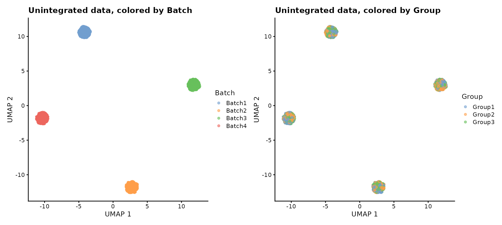
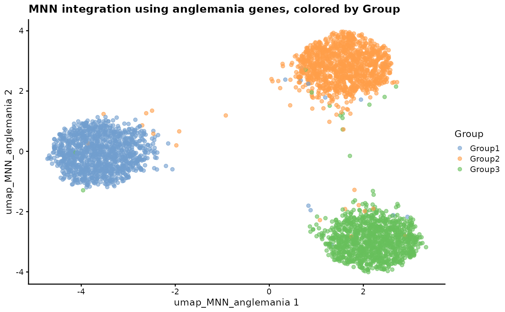
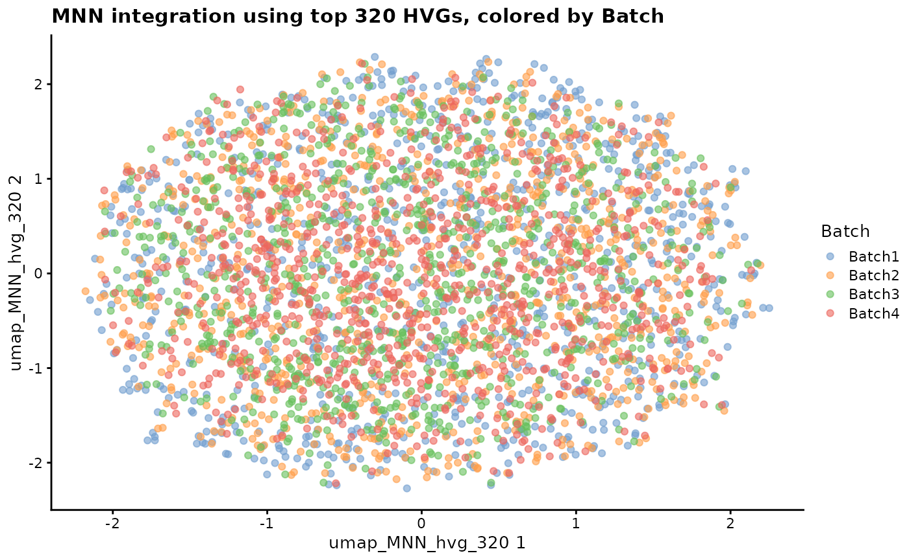
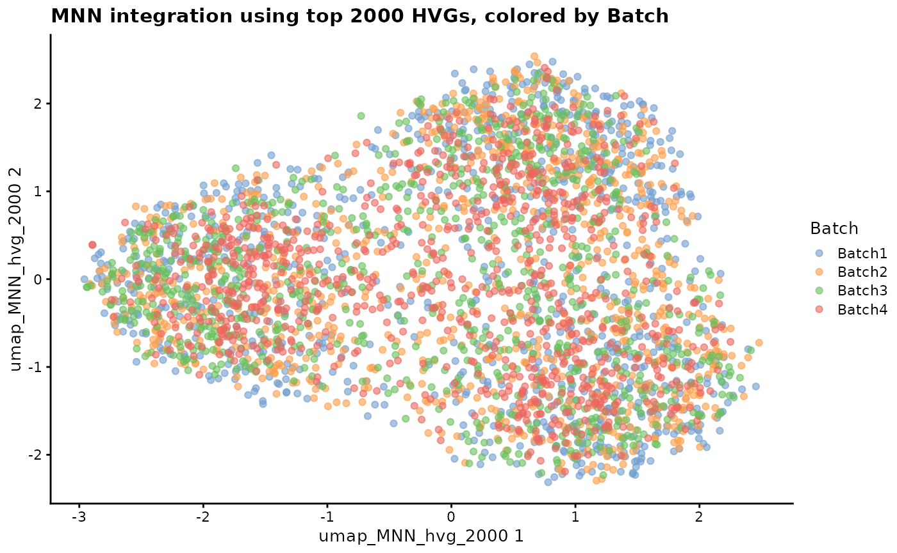

Running anglemania with SingleCellExperiment
2025-04-09
Source:vignettes/anglemania_tutorial.Rmd
anglemania_tutorial.RmdIntroduction
anglemania is a feature selection package that extracts genes from multi-batch scRNA-seq experiments for downstream dataset integration. The goal is to select genes that carry high biological information and low technical noise between the batches. Those genes are extracted from gene pairs that have an invariant and extremely narrow or wide angle between their expression vectors. Conventionally, highly-variable genes (HVGs) or sometimes all genes are used for integration tasks (https://www.nature.com/articles/s41592-021-01336-8). While HVGs are a great and easy way to reduce the noise and dimensionality of the data, they are not optimal for integration tasks. HVGs are sensitive to batch effects because the variance is a function of both the technical and biological variance. anglemania improves conventional usage of HVGs for integration tasks, especially when the transcriptional difference between cell types or cell states is subtle (showcased here with de.facLoc set to 0.1 (= mild differences between “Groups”)). The package can be used on top of SingleCellExperiment or Seurat objects.
Under the hood, anglemania works with file-backed big matrices (FBMs) from the bigstatsr package (https://github.com/privefl/bigstatsr/) for fast and memory efficient computation.
suppressPackageStartupMessages({
library(anglemania)
library(dplyr)
library(Seurat)
library(splatter)
library(SingleCellExperiment)
library(scater)
library(scran)
library(bluster)
library(batchelor)
})## Warning: replacing previous import 'S4Arrays::makeNindexFromArrayViewport' by
## 'DelayedArray::makeNindexFromArrayViewport' when loading 'SummarizedExperiment'Create simulated data with mild batch effects and mild differences between the groups/cell types
batch.facLoc <- 0.3
de.facLoc <- 0.1
nBatches <- 4
nGroups <- 3
nGenes <- 5000
groupCells <- 300
sce <- splatSimulate(
batchCells = rep(groupCells * nGroups, nBatches),
batch.facLoc = batch.facLoc,
group.prob = rep(1 / nGroups, nGroups),
nGenes = nGenes,
batch.facScale = 0.1,
method = "groups",
verbose = FALSE,
out.prob = 0.001,
de.prob = 0.1, # mild
de.facLoc = de.facLoc,
de.facScale = 0.1,
bcv.common = 0.1,
seed = 42
)
sce## class: SingleCellExperiment
## dim: 5000 3600
## metadata(1): Params
## assays(6): BatchCellMeans BaseCellMeans ... TrueCounts counts
## rownames(5000): Gene1 Gene2 ... Gene4999 Gene5000
## rowData names(11): Gene BaseGeneMean ... DEFacGroup2 DEFacGroup3
## colnames(3600): Cell1 Cell2 ... Cell3599 Cell3600
## colData names(4): Cell Batch Group ExpLibSize
## reducedDimNames(0):
## mainExpName: NULL
## altExpNames(0):
assays(sce)## List of length 6
## names(6): BatchCellMeans BaseCellMeans BCV CellMeans TrueCounts countsunintegrated data
- clusters are driven by batch effects
sce_unintegrated <- sce
# Normalization.
sce_unintegrated <- logNormCounts(sce_unintegrated)
# Feature selection.
dec <- modelGeneVar(sce_unintegrated)
hvg <- getTopHVGs(dec, prop = 0.1)
# PCA.
set.seed(1234)
sce_unintegrated <- scater::runPCA(sce_unintegrated, ncomponents = 50, subset_row = hvg)
# Clustering.
colLabels(sce_unintegrated) <- clusterCells(sce_unintegrated,
use.dimred = "PCA",
BLUSPARAM = NNGraphParam(cluster.fun = "louvain")
)
# Visualization.
sce_unintegrated <- scater::runUMAP(sce_unintegrated, dimred = "PCA")
plotUMAP(sce_unintegrated, colour_by = "Batch")
plotUMAP(sce_unintegrated, colour_by = "Group")
run anglemania
create anglemania object
- We create an anglemania object to have a standardized input to the
anglemania function
- It can be created from:
- An SingleCellExperiment (SCE) object
- Seurat object
- a list of SCE and/or Seurat objects
- It can be created from:
- pre-requisites are that you:
- have a column in the metadata (colData for SCE) that specifies the batch/sample a cell belongs to
- or if you pass a list of SCE/Seurat objects, just provide this as the input and don’t specify a batch key
## DataFrame with 6 rows and 4 columns
## Cell Batch Group ExpLibSize
## <character> <character> <factor> <numeric>
## Cell1 Cell1 Batch1 Group1 46898.1
## Cell2 Cell2 Batch1 Group1 54688.2
## Cell3 Cell3 Batch1 Group2 52027.9
## Cell4 Cell4 Batch1 Group1 52319.5
## Cell5 Cell5 Batch1 Group3 37774.7
## Cell6 Cell6 Batch1 Group3 58112.3
batch_key <- "Batch"
angl <- create_anglemania_object(
sce,
batch_key = batch_key
)## No dataset_key specified.
## Assuming that all samples belong to the same dataset and are separated by batch_key: Batch## Using the intersection of filtered genes from all batches...## Number of genes in intersected set: 4964## Extracting count matrices...## Filtering each batch to at least 1 cells per gene...
angl## anglemania_object
## --------------
## Dataset key: NA
## Batch key: Batch
## Number of datasets: 1
## Total number of batches: 4
## Batches (showing first 5):
## Batch1, Batch2, Batch3, Batch4
## Number of intersected genes: 4964
## Intersected genes (showing first 10):
## Gene1, Gene2, Gene3, Gene4, Gene5, Gene6, Gene7, Gene8, Gene9, Gene10 , ...
## Min cells per gene: 1run anglemania function
- the anglemania function has five arguments
- the input anglemania object
- method: either cosine, spearman or diem
- this is the method by which the relationship of the gene pairs is measured. Default is cosine, which is the cosine similarity between the expression vectors of the gene pairs.
- zscore_mean_threshold: We compute a mean of the zscore of the relationship between a gene pair, and then we set a minimal cutoff for the (absolute) mean zscore. A cutoff of 2 means that the filtered gene pairs have a relationship, e.g. cosine similarity, that is 2 standard deviations away from the mean of all cosine similarities from this dataset. A higher value means a more stringent cutoff.
- zscore_sn_threshold: The SN or signal-to-noise ratio measures the invariance of the relationship of the relationship between the gene pair. A high SN ratio means that the relationship is constant over multiple batches.
- max_n_genes: you can specify a maximum number of extracted genes. They are sorted by decreasing mean zscore
angl <- anglemania(angl,
zscore_mean_threshold = 2,
zscore_sn_threshold = 2,
max_n_genes = 2000 # optionally define a max number of genes.
)## Computing angles and transforming to z-scores...## Creating directory "/tmp/Rtmp3u9iaN/file2354617d52f6" which didn't exist..## Creating directory "/tmp/Rtmp3u9iaN/file23541a8c7bb5" which didn't exist..## Creating directory "/tmp/Rtmp3u9iaN/file2354701974f" which didn't exist..## Creating directory "/tmp/Rtmp3u9iaN/file23541d907be7" which didn't exist..## Computing statistics...## Weighting matrix_list...## Calculating mean...## Calculating sds...## Filtering features...## Selecting features...## [1] "Selected 1496 genes for integration."
# If you think the number of selected genes is too high or low you can adjust the thresholds:
angl <- select_genes(angl,
zscore_mean_threshold = 2.5,
zscore_sn_threshold = 2.5)## [1] "Selected 306 genes for integration."
# Inspect the anglemania genes
integration_genes <- get_anglemania_genes(angl)
head(integration_genes)## [1] "Gene394" "Gene3527" "Gene71" "Gene5000" "Gene1055" "Gene4201"
length(integration_genes)## [1] 306MNN integration
Plot
plotReducedDim(sce, colour_by = "Batch", dimred = "umap_MNN_anglemania") +
ggtitle("MNN integration using anglemania genes, colored by Batch")
plotReducedDim(sce, colour_by = "Group", dimred = "umap_MNN_anglemania") +
ggtitle("MNN integration using anglemania genes, colored by Group")
plotReducedDim(sce, colour_by = "Batch", dimred = "umap_MNN_hvg_320") +
ggtitle("MNN integration using top 320 HVGs, colored by Batch")
plotReducedDim(sce, colour_by = "Group", dimred = "umap_MNN_hvg_320") +
ggtitle("MNN integration using top 320 HVGs, colored by Group")
plotReducedDim(sce, colour_by = "Batch", dimred = "umap_MNN_hvg_2000") +
ggtitle("MNN integration using top 2000 HVGs, colored by Batch")
plotReducedDim(sce, colour_by = "Group", dimred = "umap_MNN_hvg_2000") +
ggtitle("MNN integration using top 2000 HVGs, colored by Group")## R version 4.4.3 (2025-02-28)
## Platform: x86_64-pc-linux-gnu
## Running under: Ubuntu 24.04.2 LTS
##
## Matrix products: default
## BLAS: /usr/lib/x86_64-linux-gnu/openblas-pthread/libblas.so.3
## LAPACK: /usr/lib/x86_64-linux-gnu/openblas-pthread/libopenblasp-r0.3.26.so; LAPACK version 3.12.0
##
## locale:
## [1] LC_CTYPE=C.UTF-8 LC_NUMERIC=C LC_TIME=C.UTF-8
## [4] LC_COLLATE=C.UTF-8 LC_MONETARY=C.UTF-8 LC_MESSAGES=C.UTF-8
## [7] LC_PAPER=C.UTF-8 LC_NAME=C LC_ADDRESS=C
## [10] LC_TELEPHONE=C LC_MEASUREMENT=C.UTF-8 LC_IDENTIFICATION=C
##
## time zone: UTC
## tzcode source: system (glibc)
##
## attached base packages:
## [1] stats4 stats graphics grDevices utils datasets methods
## [8] base
##
## other attached packages:
## [1] batchelor_1.22.0 bluster_1.16.0
## [3] scran_1.34.0 scater_1.34.1
## [5] ggplot2_3.5.1 scuttle_1.16.0
## [7] splatter_1.30.0 SingleCellExperiment_1.28.1
## [9] SummarizedExperiment_1.36.0 Biobase_2.66.0
## [11] GenomicRanges_1.58.0 GenomeInfoDb_1.42.3
## [13] IRanges_2.40.1 S4Vectors_0.44.0
## [15] BiocGenerics_0.52.0 MatrixGenerics_1.18.1
## [17] matrixStats_1.5.0 Seurat_5.2.1
## [19] SeuratObject_5.0.2 sp_2.2-0
## [21] dplyr_1.1.4 anglemania_0.99.1
##
## loaded via a namespace (and not attached):
## [1] RcppAnnoy_0.0.22 splines_4.4.3
## [3] later_1.4.1 tibble_3.2.1
## [5] polyclip_1.10-7 fastDummies_1.7.5
## [7] lifecycle_1.0.4 edgeR_4.4.2
## [9] doParallel_1.0.17 globals_0.16.3
## [11] lattice_0.22-6 MASS_7.3-64
## [13] backports_1.5.0 magrittr_2.0.3
## [15] limma_3.62.2 plotly_4.10.4
## [17] sass_0.4.9 rmarkdown_2.29
## [19] jquerylib_0.1.4 yaml_2.3.10
## [21] bigparallelr_0.3.2 metapod_1.14.0
## [23] httpuv_1.6.15 sctransform_0.4.1
## [25] spam_2.11-1 spatstat.sparse_3.1-0
## [27] reticulate_1.42.0 cowplot_1.1.3
## [29] pbapply_1.7-2 RColorBrewer_1.1-3
## [31] ResidualMatrix_1.16.0 abind_1.4-8
## [33] zlibbioc_1.52.0 Rtsne_0.17
## [35] purrr_1.0.4 bigassertr_0.1.6
## [37] GenomeInfoDbData_1.2.13 ggrepel_0.9.6
## [39] irlba_2.3.5.1 listenv_0.9.1
## [41] spatstat.utils_3.1-3 goftest_1.2-3
## [43] RSpectra_0.16-2 dqrng_0.4.1
## [45] spatstat.random_3.3-3 fitdistrplus_1.2-2
## [47] parallelly_1.43.0 DelayedMatrixStats_1.28.1
## [49] pkgdown_2.1.1 codetools_0.2-20
## [51] DelayedArray_0.32.0 tidyselect_1.2.1
## [53] UCSC.utils_1.2.0 farver_2.1.2
## [55] viridis_0.6.5 ScaledMatrix_1.14.0
## [57] bigstatsr_1.6.1 spatstat.explore_3.4-2
## [59] flock_0.7 jsonlite_2.0.0
## [61] BiocNeighbors_2.0.1 progressr_0.15.1
## [63] ggridges_0.5.6 survival_3.8-3
## [65] iterators_1.0.14 systemfonts_1.2.2
## [67] foreach_1.5.2 tools_4.4.3
## [69] ragg_1.3.3 ica_1.0-3
## [71] Rcpp_1.0.14 glue_1.8.0
## [73] gridExtra_2.3 SparseArray_1.6.2
## [75] xfun_0.52 withr_3.0.2
## [77] fastmap_1.2.0 rsvd_1.0.5
## [79] digest_0.6.37 R6_2.6.1
## [81] mime_0.13 textshaping_1.0.0
## [83] colorspace_2.1-1 scattermore_1.2
## [85] tensor_1.5 spatstat.data_3.1-6
## [87] tidyr_1.3.1 generics_0.1.3
## [89] data.table_1.17.0 FNN_1.1.4.1
## [91] httr_1.4.7 htmlwidgets_1.6.4
## [93] S4Arrays_1.6.0 uwot_0.2.3
## [95] pkgconfig_2.0.3 gtable_0.3.6
## [97] lmtest_0.9-40 XVector_0.46.0
## [99] htmltools_0.5.8.1 dotCall64_1.2
## [101] scales_1.3.0 png_0.1-8
## [103] spatstat.univar_3.1-2 knitr_1.50
## [105] reshape2_1.4.4 checkmate_2.3.2
## [107] nlme_3.1-167 cachem_1.1.0
## [109] zoo_1.8-13 stringr_1.5.1
## [111] rmio_0.4.0 KernSmooth_2.23-26
## [113] vipor_0.4.7 parallel_4.4.3
## [115] miniUI_0.1.1.1 desc_1.4.3
## [117] pillar_1.10.2 grid_4.4.3
## [119] vctrs_0.6.5 RANN_2.6.2
## [121] promises_1.3.2 BiocSingular_1.22.0
## [123] ff_4.5.2 beachmat_2.22.0
## [125] xtable_1.8-4 cluster_2.1.8
## [127] beeswarm_0.4.0 evaluate_1.0.3
## [129] cli_3.6.4 locfit_1.5-9.12
## [131] compiler_4.4.3 rlang_1.1.5
## [133] crayon_1.5.3 future.apply_1.11.3
## [135] labeling_0.4.3 ps_1.9.0
## [137] ggbeeswarm_0.7.2 plyr_1.8.9
## [139] fs_1.6.5 stringi_1.8.7
## [141] viridisLite_0.4.2 deldir_2.0-4
## [143] BiocParallel_1.40.1 munsell_0.5.1
## [145] lazyeval_0.2.2 spatstat.geom_3.3-6
## [147] Matrix_1.7-2 RcppHNSW_0.6.0
## [149] patchwork_1.3.0 sparseMatrixStats_1.18.0
## [151] future_1.34.0 statmod_1.5.0
## [153] shiny_1.10.0 ROCR_1.0-11
## [155] igraph_2.1.4 bslib_0.9.0
## [157] bit_4.6.0